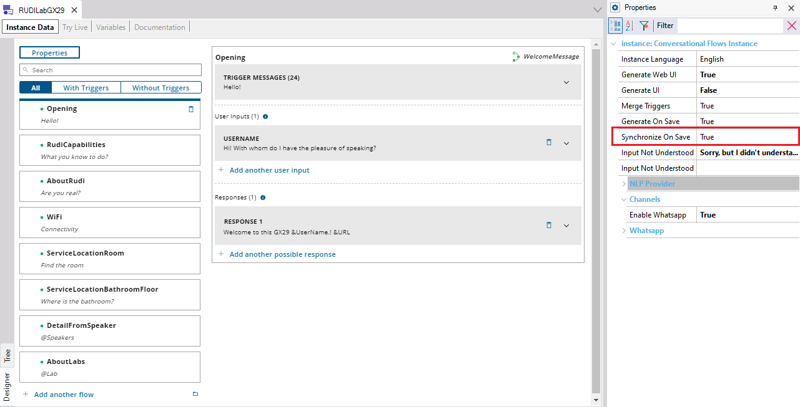

Determines if when saving changes to the instance it will be synchronized with the NLP provider or not.
Scope Objects: Conversational Flows Instance Description
This property is available for the Flow of Conversational Flows object. When saving changes to the instance it will be synchronized with the NLP provider if Synchronize On Save property is set to true.  AvailabilityThis property is available since GeneXus 17. See Also
|
| Backlinks | |
| Force Chatbot Generation menu option | Generate On Save property |